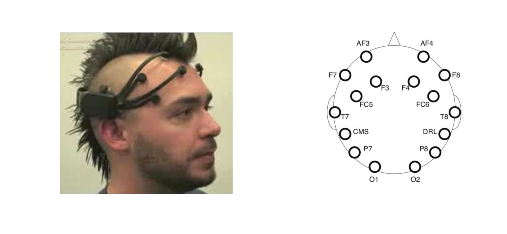
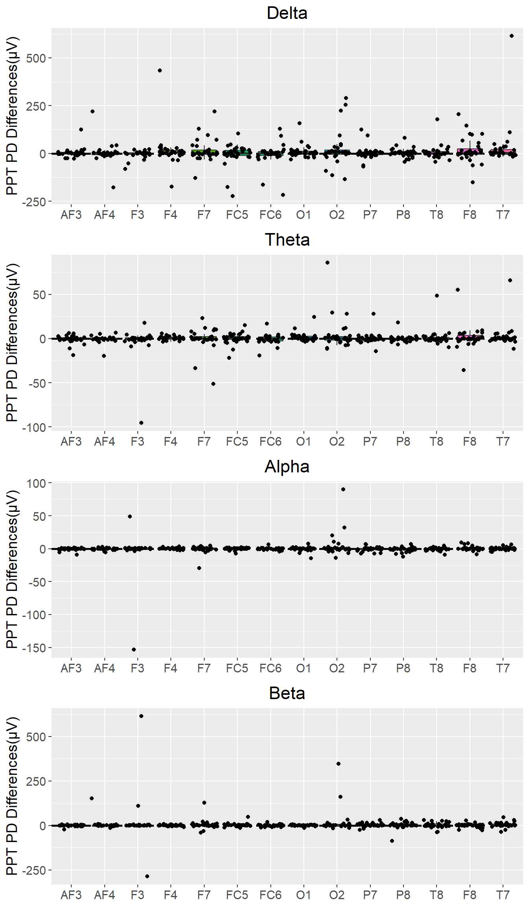

# loading the packages used
pacman:: p_load(httr, jsonlite, dplyr, openxlsx, ggplot2, knitr, tibble, tidyverse, glue, kableExtra, reshape2, gridExtra, pheatmap, jpeg, raster, BiocManager, grDevices, imager, readbitmap)
# This function prints a table in APA format
table_function <- function(table, caption, note){kable(table, format = "html",col.names = colnames(table), row.names = F, digits = 2, align = c(rep("c", times = ncol(table))),
caption = caption) %>%
kable_styling(full_width = TRUE) %>%
row_spec(row = 0, align = "c") %>%
footnote(general_title = "Note.", general = note,
footnote_as_chunk = TRUE)}Participants performed aircraft flight simulations using virtual reality. The difficulty of flight operations was manipulated.Participants wore an Emotiv EPOC electroencephalography (EEG) headset. I am interested in evaluating possible associations between neural activity and the difficulty, or mental demand of flight.
This is a 14 channel portable EEG system. Characteristics of this system benefits research looking at dynamic tasks. The photos below were taken from Duvanige et al., 2013 [link] (https://biomedical-engineering-online.biomedcentral.com/articles/10.1186/1475-925X-12-56)

The dataset was achieved through the EEGLAB extension ‘Darbeleil’.
# Import, format, and remove redunant variables.
df <- read.csv('C:/Users/akfra/Desktop/Power_CompleteTable.csv')
df$ppt <- regmatches(df[,1], regexpr("[0-9].*[0-9]", df[,1])) #format participant ID
df <- df[,3:ncol(df)] #removing 'filename' and 'condition' from dataframe.
df <- df[,c(1,3:ncol(df))]
# Manipulate data into power density differences. High workload - low workload.
dflow <- df[df$WL == 'LOW',]
dfhigh<- df[df$WL == 'HIGH',]
df_diffs <- data.frame(dflow$ppt, dflow$Freq_int_name, dfhigh[,2:15]-dflow[,2:15])
# Display data in table
colnames(df_diffs)[1:2] <- c('PPT', 'Range')
df_diffs$PPT <- as.numeric(df_diffs$PPT)
df_diffs <- df_diffs[order(df_diffs$PPT),]
table <- head(df_diffs, 15)
caption <- 'The Effects of Workload on Power Densities'
note <- 'Effects were obtained by subtracting low workload power densities from high workload for each subject'
table_function(table, caption, note)| PPT | Range | AF3 | AF4 | F3 | F4 | F7 | FC5 | FC6 | O1 | O2 | P7 | P8 | T8 | F8 | T7 |
|---|---|---|---|---|---|---|---|---|---|---|---|---|---|---|---|
| 1 | all | 5.13 | 53.18 | 23.82 | 34.09 | 102.22 | 19.06 | 15.83 | 25.38 | 45.52 | 133.31 | 3.29 | 47.09 | 276.46 | 43.31 |
| 1 | delta | -1.49 | 43.66 | 21.74 | 28.87 | 71.16 | 11.63 | 10.99 | 11.41 | 48.46 | 93.29 | 4.04 | 43.08 | 205.55 | 34.55 |
| 1 | teta | 6.09 | 6.67 | 1.47 | 4.16 | 23.03 | 5.50 | 3.42 | 11.67 | 2.50 | 28.11 | 0.03 | 4.52 | 55.18 | 6.55 |
| 1 | alfa | 1.58 | 2.01 | 0.41 | 1.25 | 4.62 | 0.81 | 0.89 | 2.20 | -1.34 | 7.17 | -0.21 | 0.61 | 9.57 | 1.35 |
| 1 | beta | -1.05 | 0.85 | 0.20 | -0.19 | 3.42 | 1.11 | 0.53 | 0.10 | -4.10 | 4.74 | -0.57 | -1.12 | 6.17 | 0.86 |
| 2 | all | 5.10 | -0.70 | -9.45 | NaN | -1.78 | -255.02 | -15.41 | -29.62 | 15.40 | NaN | -2.47 | -10.19 | -9.57 | -3.05 |
| 2 | delta | 4.23 | 2.69 | -9.72 | NaN | -2.40 | -223.85 | -11.66 | -19.72 | 11.55 | NaN | -10.73 | -9.02 | -5.30 | 0.68 |
| 2 | teta | -0.66 | -0.90 | -0.21 | NaN | -0.43 | -21.71 | -1.43 | -3.70 | -0.46 | NaN | -0.99 | -0.98 | -2.27 | -1.27 |
| 2 | alfa | 0.37 | -0.05 | -0.20 | NaN | -0.17 | -7.58 | -1.33 | -2.54 | -0.39 | NaN | -0.10 | -0.37 | -1.17 | -0.15 |
| 2 | beta | 1.17 | -2.43 | 0.68 | NaN | 1.23 | -1.88 | -0.99 | -3.66 | 4.69 | NaN | 9.35 | 0.18 | -0.82 | -2.30 |
| 3 | all | 17.76 | NaN | 0.55 | 39.19 | 49.17 | 44.14 | 82.59 | 32.59 | 123.79 | 42.41 | 29.26 | -9.82 | NaN | 62.52 |
| 3 | delta | 18.58 | NaN | -1.20 | 31.71 | 42.78 | 40.00 | 91.95 | 19.94 | 94.79 | 1.75 | 9.70 | 3.65 | NaN | 35.89 |
| 3 | teta | -1.05 | NaN | -2.09 | 0.36 | 2.41 | 0.51 | -3.19 | 2.69 | 11.88 | 2.46 | -0.01 | 1.47 | NaN | 0.81 |
| 3 | alfa | -0.82 | NaN | 0.78 | 1.08 | 0.24 | 1.38 | -4.47 | 7.66 | 7.51 | 6.57 | 3.14 | -9.07 | NaN | 1.00 |
| 3 | beta | 1.04 | NaN | 3.06 | 6.04 | 3.75 | 2.25 | -1.70 | 2.29 | 9.60 | 31.62 | 16.43 | -5.87 | NaN | 24.83 |
| Note. Effects were obtained by subtracting low workload power densities from high workload for each subject |
m.across_wl <- melt(df_diffs[,2:ncol(df_diffs)], id.vars = "Range")
m.across_wl$value <- as.numeric(m.across_wl$value)
d <- ggplot(m.across_wl[m.across_wl$Range == "delta",], aes(variable, value, fill= variable)) + geom_hline(yintercept=0, linetype="dashed", color = "black", size=1) + geom_boxplot(outlier.shape = NA) + geom_jitter() + ylab("PPT PD Differences(µV)") + ggtitle("Delta") + theme(plot.title = element_text(hjust = 0.5)) + theme(text=element_text(size=14)) + theme(axis.title.x = element_blank()) + theme(legend.position="none")
t <- ggplot(m.across_wl[m.across_wl$Range == "teta",], aes(variable, value, fill= variable)) + geom_hline(yintercept=0, linetype="dashed", color = "black", size=1) + geom_boxplot(outlier.shape = NA) + geom_jitter() + ylab("PPT PD Differences(µV)") + ggtitle("Theta") + theme(plot.title = element_text(hjust = 0.5)) + theme(text=element_text(size=14)) + theme(axis.title.x = element_blank()) + theme(legend.position="none")
a <- ggplot(m.across_wl[m.across_wl$Range == "alfa",], aes(variable, value, fill= variable)) + geom_hline(yintercept=0, linetype="dashed", color = "black", size=1) + geom_boxplot(outlier.shape = NA) + geom_jitter() + ylab("PPT PD Differences(µV)") + ggtitle("Alpha") + theme(plot.title = element_text(hjust = 0.5)) + theme(text=element_text(size=14)) + theme(axis.title.x = element_blank()) + theme(legend.position="none")
b <- ggplot(m.across_wl[m.across_wl$Range == "beta",], aes(variable, value, fill= variable)) + geom_hline(yintercept=0, linetype="dashed", color = "black", size=1) + geom_boxplot(outlier.shape = NA) + geom_jitter() + ylab("PPT PD Differences(µV)") + ggtitle("Beta") + theme(plot.title = element_text(hjust = 0.5)) + theme(text=element_text(size=14)) + theme(axis.title.x = element_blank()) + theme(legend.position="none")
grid.arrange(d, t, a, b, nrow = 4)
There are some really extreme values. Remove these.
cols <- c("1"="#00aedb","2"="#ffc425","3"="#f37735")
p <- ggplot(m.across_wl, aes(x = NA, y = value)) + geom_boxplot(outlier.shape = NA, width = 0.2) + geom_jitter() + theme(axis.title.x = element_blank()) + theme(axis.text.x = element_blank())
stand_dev <- sd(m.across_wl$value, na.rm = T)
p <- p + geom_hline(yintercept=c(stand_dev, stand_dev *-1), linetype="solid", color = "#00aedb", size=1) + geom_hline(yintercept=c(stand_dev*2, stand_dev *-2), linetype="solid", color = "#ffc425", size=1) + geom_hline(yintercept=c(stand_dev*3, stand_dev *-3), linetype="solid", color = "#f37735", size=1) + ggtitle('Standard Deviations')
d <- ggplot(m.across_wl, aes(x=value))+ geom_density() + theme(axis.title.x = element_blank()) + theme(axis.text.x = element_blank()) + ggtitle('Density Plot')
grid.arrange(p,d, nrow = 1)The extreme values here are very unlikely to be reliable sources of neural activity. Each point is an individual difference between two points of time corresponding to different workload conditions. Changes of ~200 mv and above are not natural phenomena and are likely better explained by displacement of electrodes and other artifacts.
m.across_wl_RemoveOutliers <- m.across_wl
m.across_wl_RemoveOutliers <- m.across_wl_RemoveOutliers[m.across_wl_RemoveOutliers$value < stand_dev * 2,]
m.across_wl_RemoveOutliers <- m.across_wl_RemoveOutliers[m.across_wl_RemoveOutliers$value > stand_dev *-2,]
m.across_wl_RemoveOutliers <- na.omit(m.across_wl_RemoveOutliers)
d <- ggplot(m.across_wl_RemoveOutliers[m.across_wl_RemoveOutliers$Range == "delta",], aes(variable, value, fill= variable)) + geom_hline(yintercept=0, linetype="dashed", color = "black", size=1) + geom_boxplot(outlier.shape = NA) + geom_jitter() + ylab("PPT PD Differences(µV)") + ggtitle("Delta") + theme(plot.title = element_text(hjust = 0.5)) + theme(text=element_text(size=14)) + theme(axis.title.x = element_blank()) + scale_y_continuous(limits=c(-50,50), breaks=seq(-50,50,20)) + theme(legend.position="none")
t <- ggplot(m.across_wl_RemoveOutliers[m.across_wl_RemoveOutliers$Range == "teta",], aes(variable, value, fill= variable)) + geom_hline(yintercept=0, linetype="dashed", color = "black", size=1) + geom_boxplot(outlier.shape = NA) + geom_jitter() + ylab("PPT PD Differences(µV)") + ggtitle("Theta") + theme(plot.title = element_text(hjust = 0.5)) + theme(text=element_text(size=14)) + theme(axis.title.x = element_blank()) + scale_y_continuous(limits=c(-50,50), breaks=seq(-50,50,20)) + theme(legend.position="none")
a <- ggplot(m.across_wl_RemoveOutliers[m.across_wl_RemoveOutliers$Range == "alfa",], aes(variable, value, fill= variable)) + geom_hline(yintercept=0, linetype="dashed", color = "black", size=1) + geom_boxplot(outlier.shape = NA) + geom_jitter() + ylab("PPT PD Differences(µV)") + ggtitle("Alpha") + theme(plot.title = element_text(hjust = 0.5)) + theme(text=element_text(size=14)) + theme(axis.title.x = element_blank()) + scale_y_continuous(limits=c(-50,50), breaks=seq(-50,50,20)) + theme(legend.position="none")
b <- ggplot(m.across_wl_RemoveOutliers[m.across_wl_RemoveOutliers$Range == "beta",], aes(variable, value, fill= variable)) + geom_hline(yintercept=0, linetype="dashed", color = "black", size=1) + geom_boxplot(outlier.shape = NA) + geom_jitter() + ylab("PPT PD Differences(µV)") + ggtitle("Beta") + theme(plot.title = element_text(hjust = 0.5)) + theme(text=element_text(size=14)) + theme(axis.title.x = element_blank()) + scale_y_continuous(limits=c(-50,50), breaks=seq(-50,50,20)) + theme(legend.position="none")
grid.arrange(d, t, a, b, nrow = 4)Medians will mitigate the influence of extreme values which still appear in data (above boxplots)
# remove extreme values from the datastructure containing individual differences
stand_dev <- sd(m.across_wl$value, na.rm = T)
df_diffs_RemoveOutliers <- df_diffs
values <- df_diffs_RemoveOutliers[,3:ncol(df_diffs_RemoveOutliers)]
values[values > stand_dev * 2] <- NA
values[values < stand_dev * - 2] <- NA
df_diffs_RemoveOutliers[,3:ncol(df_diffs_RemoveOutliers)] <- values
# aggregate median effect sizes
AF3_means <- aggregate(AF3 ~ Range, data = df_diffs_RemoveOutliers, median)
effects <- data.frame(AF3_means)
for(i in 4:16) {
m <- aggregate(df_diffs_RemoveOutliers[,i] ~ Range, data = df_diffs_RemoveOutliers, median)
effects <- data.frame(effects,m[,2])
}
# format table
colnames(effects)[2:15]<- colnames(df_diffs[3:16])
rownames(effects) <- c('Alpha', 'All', 'Beta', 'Delta', 'Theta')
table_function <- function(table, caption, note){kable(table, format = "html",col.names = colnames(table), digits = 2, align = c(rep("c", times = ncol(table))),
caption = caption) %>%
kable_styling(full_width = TRUE) %>%
row_spec(row = 0, align = "c") %>%
footnote(general_title = "Note.", general = note,
footnote_as_chunk = TRUE)}
table <- effects[,2:ncol(effects)]
caption <- 'Median effect size of high workload - low workload power densities'
note <- 'Median statistics were chosen to offset influence of noise that likely related to generation of larger effect sizes. Values beyond 2 sds were removed as they likely were a result of noise, common in movement + EEG settings.'
table_function(table, caption, note)| AF3 | AF4 | F3 | F4 | F7 | FC5 | FC6 | O1 | O2 | P7 | P8 | T8 | F8 | T7 | |
|---|---|---|---|---|---|---|---|---|---|---|---|---|---|---|
| Alpha | -0.13 | -0.12 | -0.06 | 0.08 | -0.11 | 0.06 | -0.14 | 0.15 | -0.10 | -0.11 | -1.06 | -0.02 | -0.18 | 0.03 |
| All | 2.39 | 2.49 | -0.86 | 4.30 | 0.71 | 5.30 | 1.13 | 3.69 | 3.32 | 0.72 | 1.93 | 0.86 | 0.86 | 6.14 |
| Beta | 0.42 | 0.29 | 0.20 | 0.31 | 2.07 | 1.77 | 0.06 | 0.26 | 0.43 | 1.48 | 1.54 | 0.05 | 0.70 | 2.95 |
| Delta | 0.18 | 1.14 | -0.49 | 6.39 | 0.69 | 1.26 | 1.44 | 2.05 | 4.27 | -0.17 | 1.96 | 2.32 | 1.80 | 1.65 |
| Theta | -0.36 | -0.47 | -0.25 | 0.36 | -0.04 | -0.02 | -0.18 | 0.25 | 0.27 | 0.18 | -0.44 | -0.36 | -0.06 | 0.57 |
| Note. Median statistics were chosen to offset influence of noise that likely related to generation of larger effect sizes. Values beyond 2 sds were removed as they likely were a result of noise, common in movement + EEG settings. |
Using this table to construct heatmap. I selected out ‘ALL’ to evaluate potential of particular features, and removed Delta as jaw and movement artifacts are often observed in this frequency range. Additional small amount of sampling (<4Hz) results in poor potential in pattern recognition procedures.
p1 <- pheatmap(table[c(1,3,5),], main = "Median Effect Size: High - Low workload power densities", dendrogram = F, cluster_rows = T, cluster_cols = T, fontsize = 12)This heatmap shows the relative differences in power density effects observed across different frequency bands and electrodes. Patterns resembling the ‘Engagment Index’ manifest across parietal and some frontal electrodes where beta power is increased with high workload whereas alpha and theta power densities decrease or increase minimally.
Since these patterns have been found in many other contexts of high workload and engagement this provides support for the signal acquisition procedure used in this study. Additionally it provides direction for feature selection in BCI.
engagement_ratios_all <- data.frame(table[3,1]-(table[1,1] + table[5,1]))
for (i in 2:14) {
r <- data.frame(table[3,i]-(table[1,i] + table[5,i]))
engagement_ratios_all <- data.frame(engagement_ratios_all, r)
}
colnames(engagement_ratios_all) <- colnames(table)cont….